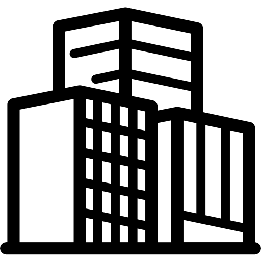

Generalny wykonawca inwestycji publicznych, przemysłowych i mieszkaniowych
Budujemy, modernizujemy i termomodernizujemy obiekty w całej Polsce. Jeden zespół odpowiada za projekt, koordynację robót, kontrolę jakości i odbiory – z harmonogramem i budżetem ustalonym przed startem prac.
-

Budownictwo ogólne
Nowe budynki, przebudowy, remonty i termomodernizacje.
-
Konstrukcje
Żelbet, mury i konstrukcje stalowe.
-
Instalacje sanitarne
Wod-kan, wentylacja i klimatyzacja.
-
Elektryka i teletechnika
Instalacje elektryczne, niskoprądowe i teletechniczne.
-
Wnętrza
Wykończenie i wyposażenie pomieszczeń.
-
Roboty towarzyszące
Roboty ziemne, dachy, elewacje, drogi i zagospodarowanie terenu.
Ponadto: roboty wykończeniowe, stolarka drewniana, PCV i aluminiowa, elementy wyposażenia oraz instalacje sieciowe.

Inwestycje publiczne i obiekty edukacyjne
Budujemy i modernizujemy szkoły oraz budynki użyteczności publicznej dla samorządów i instytucji. Znamy realia zamówień publicznych: dokumentację przetargową, nadzór inwestorski i odbiory etapowe. Prace w czynnych obiektach planujemy tak, by szkoła mogła działać w trakcie budowy.
Wybrane realizacje
- Szkoła Podstawowa nr 271, WarszawaBudowa szkoły przy ul. Poziomki 11
- Szkoła Muzyczna im. Moniuszki, WarszawaTermomodernizacja, stolarka, instalacja elektryczna · 3,46 mln zł

Obiekty przemysłowe i infrastrukturalne
Przy obiektach kolejowych i przemysłowych o wyniku decydują harmonogram, logistyka dostaw i bezpieczeństwo pracy obok czynnej infrastruktury. Dzielimy roboty na etapy, koordynujemy branże i podwykonawców, a o postępie informujemy inwestora na bieżąco.
Wybrane realizacje
- PKP Olszynka Grochowska, WarszawaDocieplenie, nowa elewacja, remont schodów · 344 tys. zł

Budynki wielorodzinne i osiedla
Realizujemy inwestycje mieszkaniowe dla deweloperów i inwestorów prywatnych – od stanu surowego po wykończenie części wspólnych. Pilnujemy standardu i detali, żeby odbiór lokali nie kończył się listą poprawek.
Wybrane realizacje
- Osiedle w WalendowieBudowa budynków B3 i A9 · 41,33 mln zł
Pytania inwestorów
Jak wygląda współpraca z WiMaks?
Zaczynamy od analizy dokumentacji i wizji lokalnej, potem przygotowujemy ofertę z jasnym zakresem. Po podpisaniu umowy ustalamy harmonogram i budżet, kierownik budowy koordynuje branże i raportuje postęp. Kończymy odbiorami i kompletem dokumentacji powykonawczej.
Czy realizujecie zamówienia publiczne?
Tak. Realizujemy inwestycje dla samorządów i instytucji publicznych – m.in. budowę Szkoły Podstawowej nr 271 w Warszawie oraz termomodernizację Szkoły Muzycznej im. Moniuszki.
Na jakim obszarze działacie?
Siedziba firmy znajduje się w Józefowie pod Warszawą. Inwestycje prowadzimy na terenie całej Polski.
Czy zajmujecie się także projektowaniem?
Tak. Jesteśmy generalnym wykonawcą i projektantem, więc możemy poprowadzić inwestycję od dokumentacji projektowej, przez wykonawstwo, po odbiory i przekazanie obiektu.
Co przesłać w zapytaniu ofertowym?
Lokalizację, rodzaj obiektu, zakres prac, dostępną dokumentację (projekt, przedmiar, SWZ) i planowany termin. Na tej podstawie przygotujemy wstępną wycenę i propozycję harmonogramu.